K-Day 002｜好想回家
起床後就冷得睡不著了。
睡袋、露宿袋和睡墊的組合應付0度沒有問題，不過露出來的頭還是冷到有點痛。毛帽戴上，再睡半小時。
四點起來煮東西吃，想早早出發避開下午的雨。
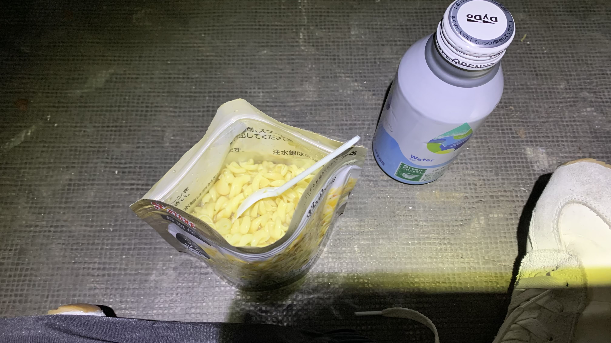
結果吃飽後躲到廁所靠著衛生紙卷，閉上眼，吹著暖風，聽著智能馬桶的流水聲和鳥叫聲，睡到六點才啟程。
據說舊式的日本廁所是建在簷廊盡頭的。因此蹲在木造的陰暗空間裡，能夠聽到蟲鳴鳥叫雨水等聲音。
京都有個著名的庭園叫作流響院，每年春秋必須抽籤才能參觀的。這類細微的聲音著實撫慰人心。
目標是67公里（不迷路的話）外的—道の駅 あおがき。
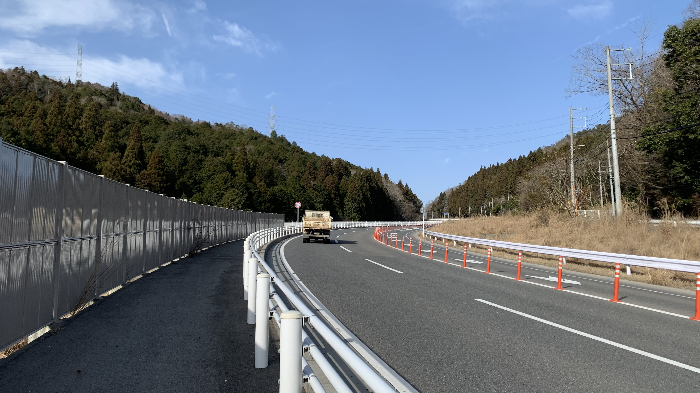
毫無意外，整個早上都是這種上坡。即便有這種人車分離的設計使人安心，還是累到走走停停。
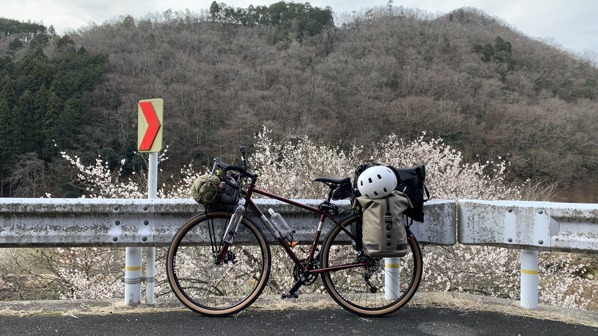
拍這張照片的時候其實是累到再也踩不動走不動了。
剛好有棵櫻花樹讓我可以假裝賞花。
我在想，似乎也沒必要騎自行車？真的好累好冷好餓。可不可以回家？
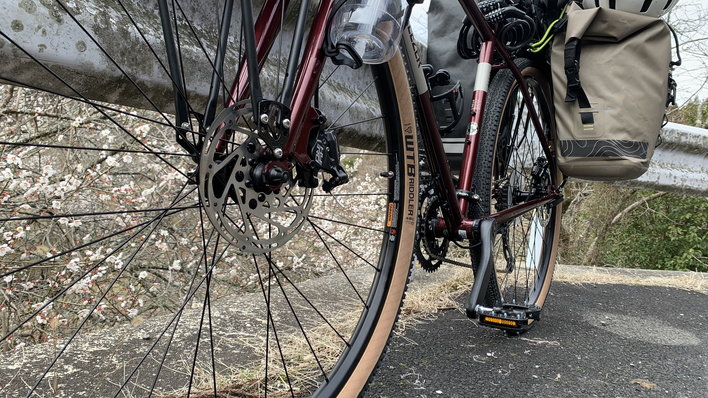
比如這個視角好像在特寫踏板，其實我只想躺在地上。
當然也只是想想而已。 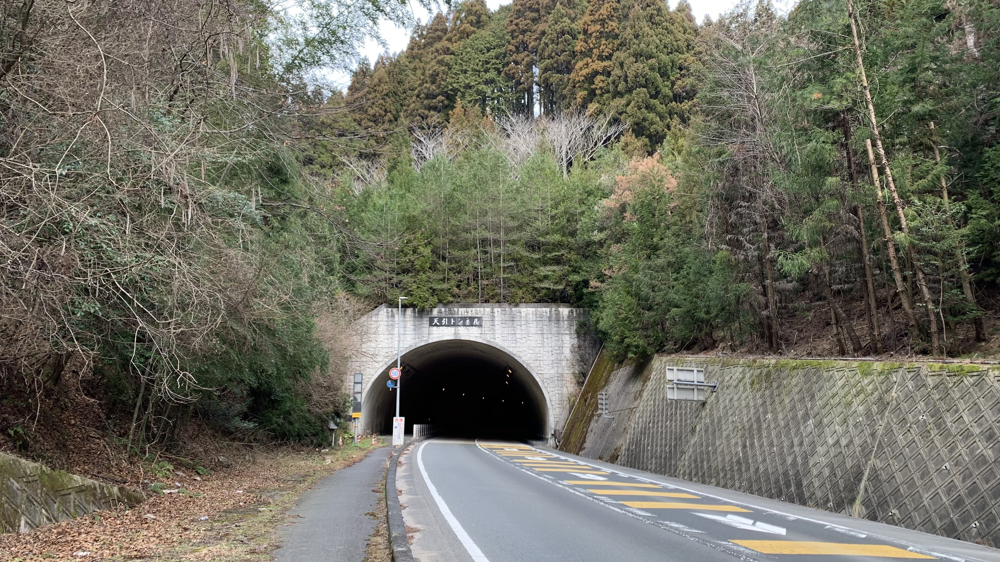
目前得出的經驗，只要看到隧道，這段上坡大概就結束了，接著會是一段長長的下坡，連接著另一個城鎮。
繼續往前的路上，在地圖上看到一間似乎不錯的咖啡店。
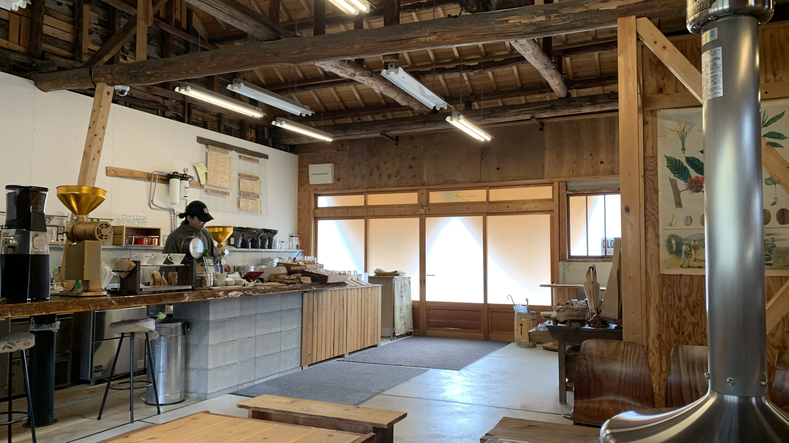
點了熱拿鐵和一個辣味芥末熱狗堡。
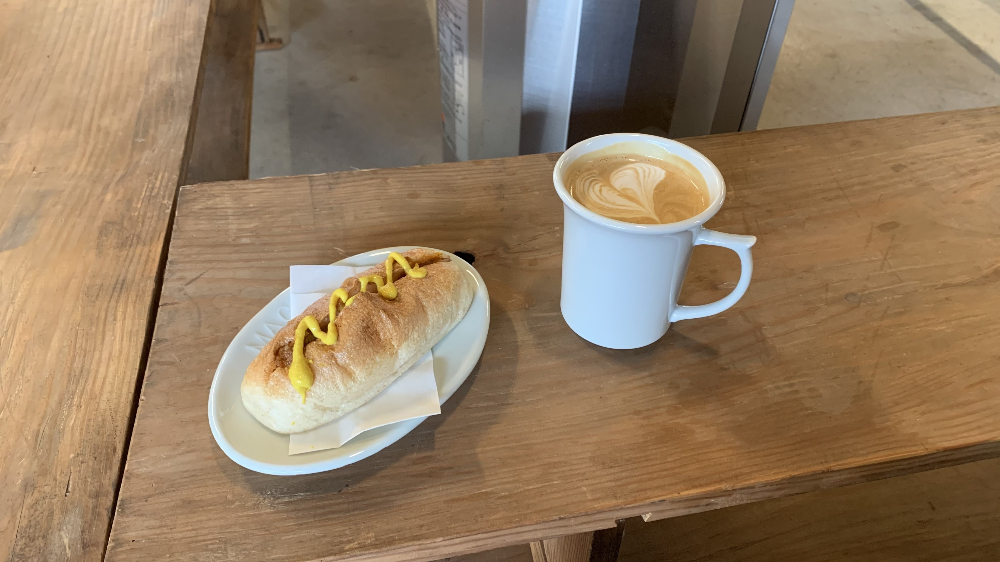
聽著烘咖啡的聲音，看老闆在機器旁扇扇子，用紙筆做紀錄。在裡面烤了兩小時的火。
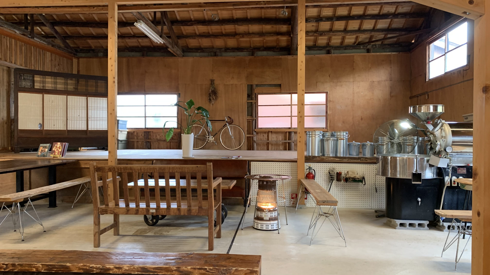
臨走時問了老闆可否替我裝一瓶水，很好心的幫我裝滿了。接著下午又是一陣上坡下坡。 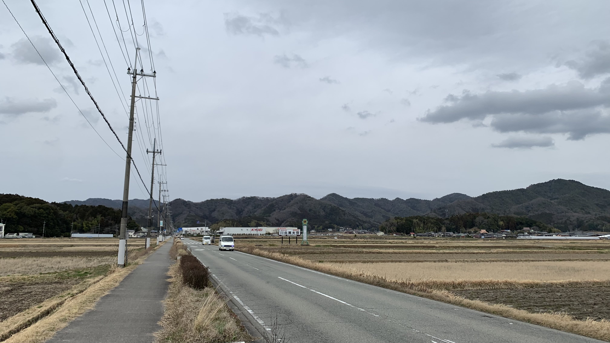
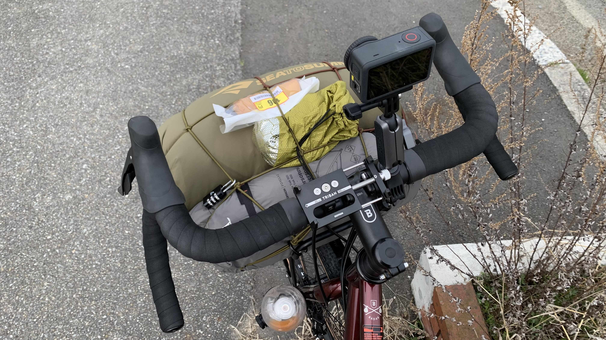
其實風景很好。我只是在想究竟有什麼必要做這種累死人的事？ 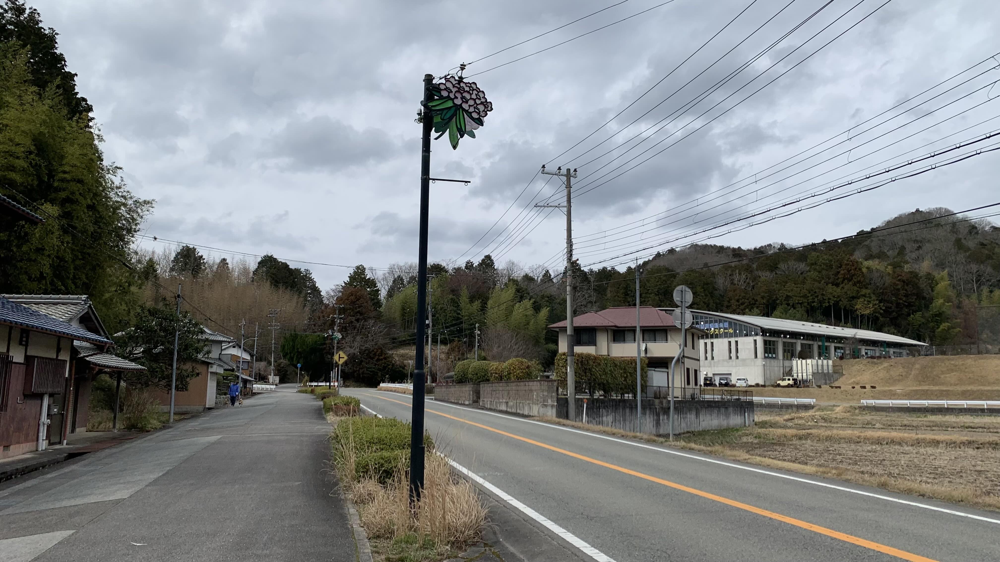
這個像路燈的柱子上好像就是丹波市花。
終於到了丹波。
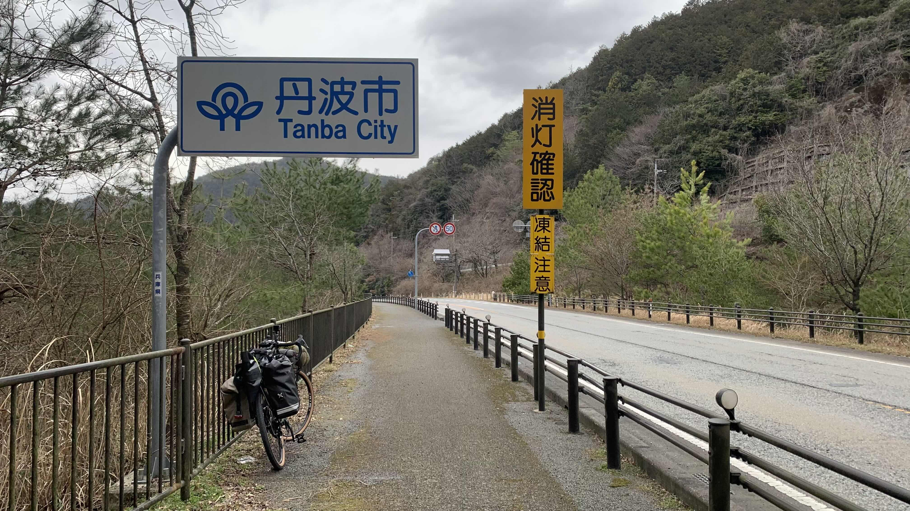
進入市區後找了一家自行車店，解決螺絲崩牙的問題。
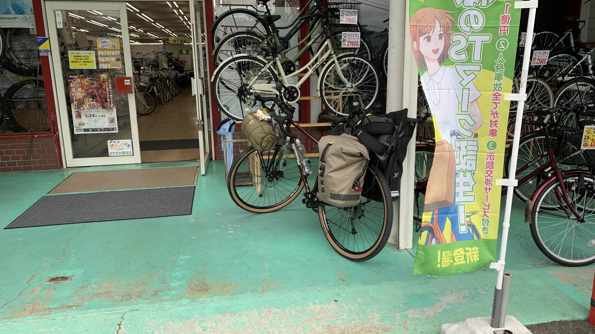
店家給了一顆螺絲幫我鎖上去。660日圓。
無論如何解決了一件事，回到原路往今天要睡覺的地方前進。
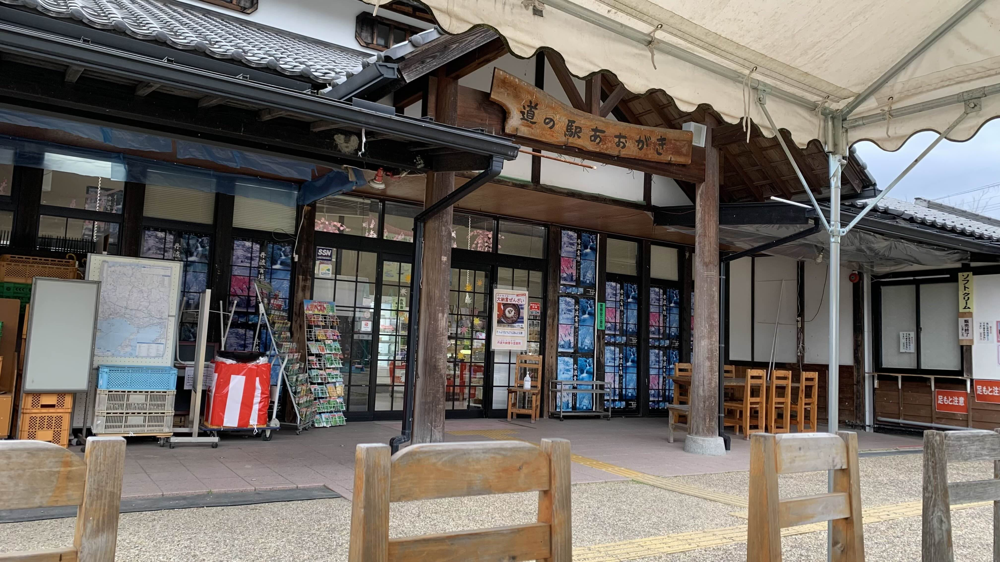
這邊小小的。這個時間半額商品也被拿光了。
買個橘子和零食當晚餐吧。
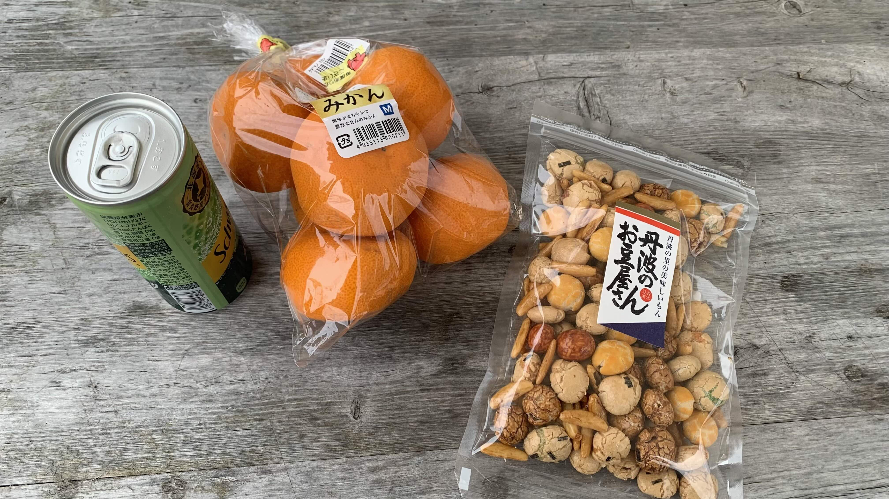
正當我這麼想著。眼前出現一位阿北
阿北問我：「可以使用這一半的桌子嗎？」
當我說好之後。問題就變成：「要吃炸魚嗎？」、「要吃雞翅咖喱嗎？」
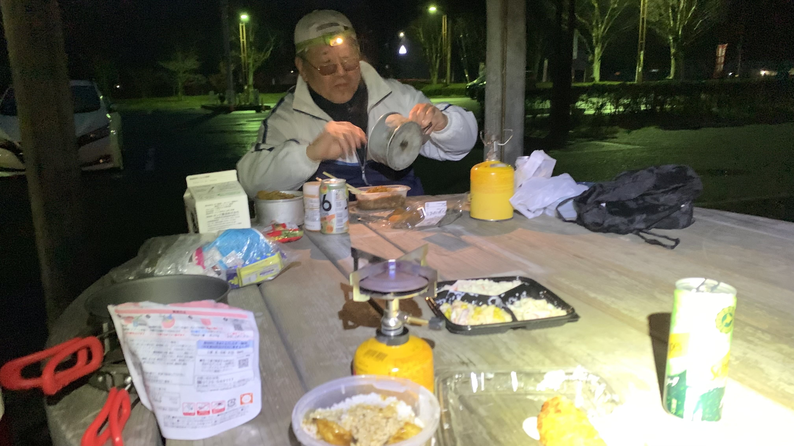
古川先生是神戶的退休教師，正在學習飛行。
我說我今天爬了一整天的山。他大笑說這不是山，這是坂而已啊，這邊是河谷。你明天會爬更多山呢！一直上升上升到最高處，才一路往下滑到鳥取的海邊。
嗯。這段路線究竟當初怎麼安排的?由於吃得太飽，已經無法思考了。
經由谷川先生的介紹，找到了良好的扎營地，也就是休息站的正門口。
此處遮風避雨，今夜得以一夜好眠。
今日花費： 咖啡 770、熱狗堡 850、牛丼春捲 752